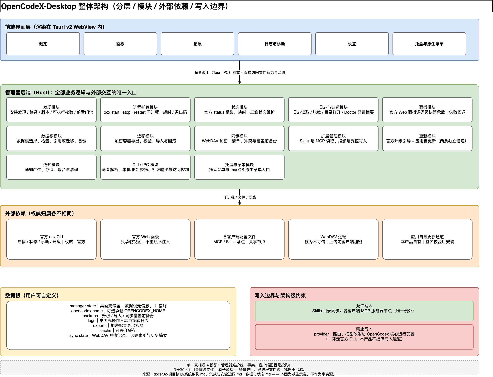
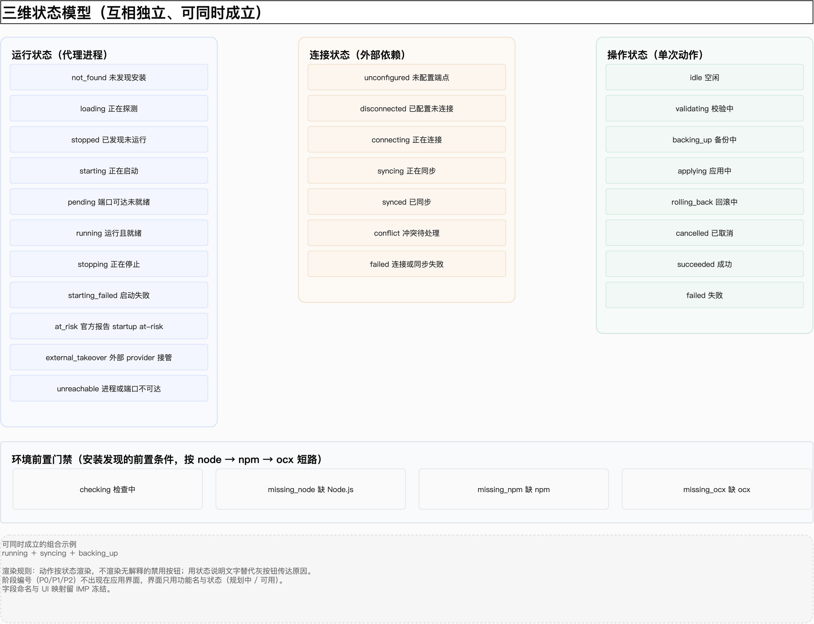
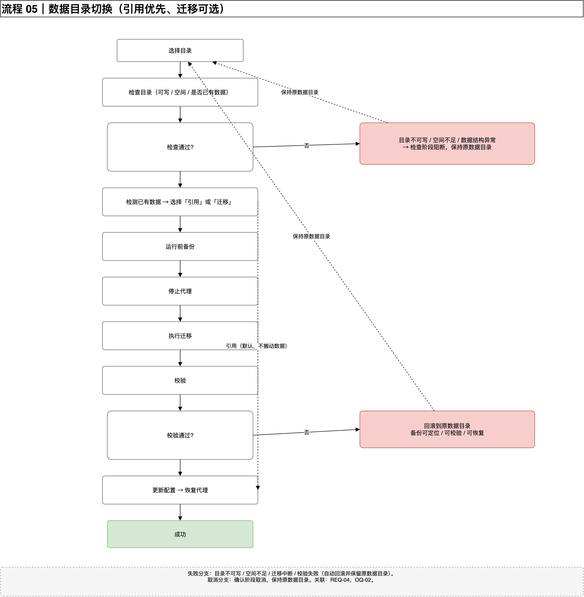
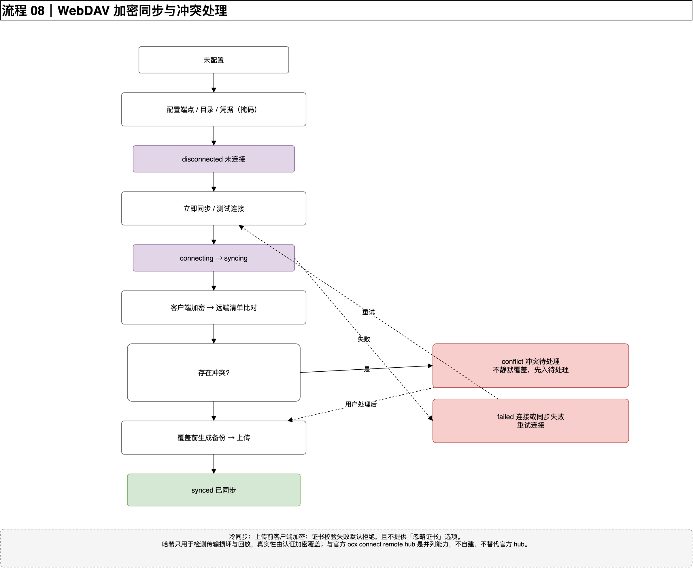
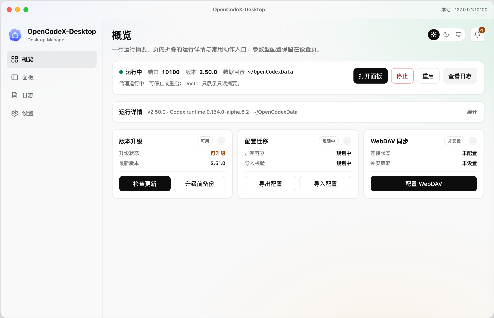
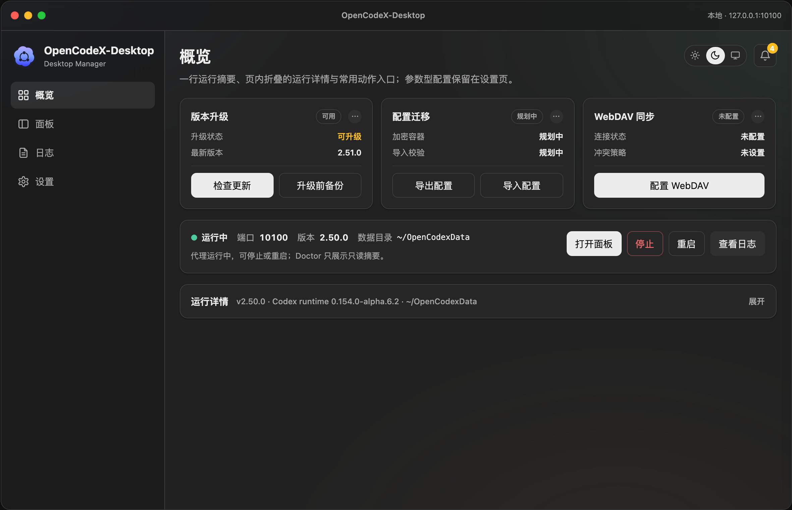
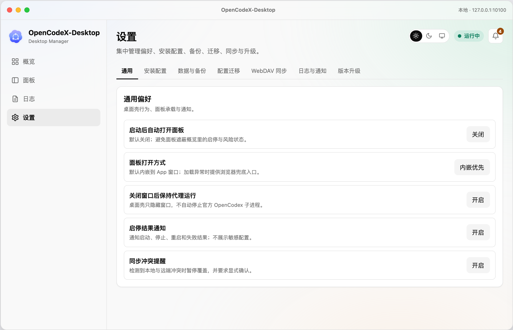
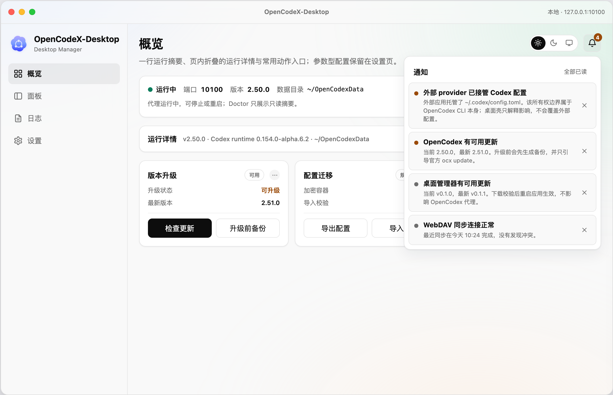

它是给 OpenCodex（一个命令行工具）做的独立桌面管理器：安装发现、进程启停、状态观测、日志诊断、配置迁移、跨机同步、Skills 与 MCP 管理，全放到图形界面里。 现在的位置是需求已经定稿、原型能点、架构和流程图画完了，但一行实现代码都还没写。
一句话：把 OpenCodex 日常要敲的命令、要另开终端看的状态，收进一个 macOS 桌面应用，同时不改变 OpenCodex 自己的行为和权威。
仓库标识 opencodex-desktop，界面展示名 OpenCodeX-Desktop。与 OpenCodex 官方项目没有隶属、授权或背书关系。
桌面壳用 Tauri v2，后端 Rust，前端是渲染在 WebView 里的 Web 界面。第一阶段以 macOS 优先，跨平台只做抽象预留，不算首期验收范围。
本项目代码与素材用 MIT。官方素材（页面快照、界面截图、标识）不随仓库分发，只在本地保留。
OpenCodex 的日常使用全靠命令行。麻烦的地方不在单条命令，而在于这些事散落在终端、配置文件和多个客户端之间。
ocx start / stop / restart先说清边界，后面才不会返工。范围原则只有一句：原型里出现的功能都要实现，P0 / P1 / P2 只表示先做后做，不表示可以不做。
ocx start / stop / restart 子进程，展示健康、端口、进程标识、最近错误ocx update 的更新事务codex-shimrestore每一条都能追到验收标准和原型落点，避免“文档里写了、原型里没有”或者反过来。
| # | 能力域 | 能力项 | 验收 | 原型落点 |
|---|---|---|---|---|
| 1 | 安装发现 | 发现、展示、校验既有安装；不管理 npm | AC-01 | 概览 · 安装与数据目录 |
| 2 | 数据目录 | 选择 / 切换 OPENCODEX_HOME；管理器产物按结构分区 | AC-02 | 设置 · 安装配置 |
| 3 | 运行托管 | 托管启停子进程；展示健康、端口、进程与最近错误 | AC-03 | 概览 · 运行状态卡 |
| 4 | 观测 | 日志只读脱敏；诊断中心；官方 Web 面板 | AC-04 | 日志 / 诊断中心 / 面板 |
| 5 | 风险识别 | 外部 provider 接管与 startup at-risk 的识别与 restore 引导 | AC-05 | 概览 · 运行状态卡 |
| 6 | 配置迁移 | 全量加密导出；导入校验、备份、确认与回滚 | AC-06 | 设置 · 配置迁移 |
| 7 | WebDAV 同步 | 全量客户端加密同步；冲突提示；覆盖前备份 | AC-07 | 设置 · WebDAV 同步 |
| 8 | 官方升级 | 升级前备份；引导官方 ocx update | AC-08 | 设置 · 版本升级（第一块） |
| 9 | 应用自更新 | 自身版本检查与更新；签名校验；失败可回滚 | AC-09 | 设置 · 版本升级（第二块） |
| 10 | CLI 控制面 | 可选、默认关闭；经本机 IPC 委托运行实例 | AC-10 | 设置 · CLI 控制面 |
| 11 | 扩展管理 | Skills 与 MCP 的发现、增删改与多客户端分发 | AC-11 | 拓展 + 设置 · 扩展管理 |
| 12 | 托盘与菜单 | 托盘菜单与 macOS 原生菜单入口 | AC-12 | 托盘 + 应用菜单 |
| 13 | 关于与归属 | 官方项目 / 本应用 / 许可与归属的区分 | AC-13 | 设置 · 关于 |
通知中心和「诊断中心 → 通知历史」共用同一份数据，算在观测能力里，跟着 AC-04 一起验收。
三层结构。前端不直接碰文件系统和网络，所有外部交互都收在 Rust 后端里，模块划分和能力域一一对应，方便从能力追到实现。

最早文档只有一个“代理运行状态”，但原型里已经出现“正在同步”“正在备份”这类并行情况。压成单一状态机必然打架，所以拆成三个互相独立的维度：

未发现 / 正在探测 / 已发现未运行 / 启动中 / 待就绪 / 运行中 / 停止中 / 启动失败 / at-risk / 外部接管 / 不可达。
未配置 / 未连接 / 连接中 / 同步中 / 已同步 / 冲突待处理 / 失败。
空闲 / 校验中 / 备份中 / 应用中 / 回滚中 / 已取消 / 成功 / 失败。
挑的是有分支、有失败、有回滚的地方。图上所有连线只有横竖两个方向、单条直线段，不穿节点，方便直接读。
node → npm → ocx 短路检查，缺什么给什么命令。
未运行 → 启动中 → 待就绪 → 运行中；失败、停止、重启各自成支。
官方状态源 → 后端映射 → 三维状态 → 前端渲染。
校验 → 备份 → 原子替换 → 重新校验 → 成功或回滚。
引用优先、迁移可选；检查不过就阻断，迁移失败自动回滚。
看风险 → 备份 → 用户确认 → 走官方 restore → 刷新状态。
口令、完整性、版本三重校验；失败一律拒绝，不做部分写入。
客户端加密 → 清单比对 → 有冲突先入待处理，不静默覆盖。
下载 → 签名校验 → 安装 → 重启接管；失败保留上一版本。
升级前必须备份成功，再引导官方 ocx update。


这个产品大半的复杂度都在这里：它要改别人机器上的配置文件，还要搬运凭据。原则是能不动就不动，非要动就先备份、可回滚、留证据。
| 分区 | 放什么 |
|---|---|
| manager state | 桌面壳设置、数据根元信息、界面偏好 |
| opencodex home | 可选承载 OPENCODEX_HOME |
| backups | 升级、导入、同步覆盖前的备份 |
| logs | 桌面壳操作日志与旋转后的日志 |
| exports | 加密配置导出容器（按凭据文件处理，权限 0600） |
| cache | 可丢弃缓存 |
| sync state | WebDAV 冲突记录、远端索引摘要、同步历史摘要 |
应用版本、官方项目信息；安装路径、版本、运行状态、端口、进程标识、数据根路径。
日志正文、备份内容、Skills 文件内容、MCP 配置结构；API key、token、WebDAV 账号口令、加密口令、MCP 环境变量值。S3 不得进仓库、Markdown、日志、命令行参数或未加密文件。
env、args、headers 一律按潜在敏感值处理。六家客户端的 MCP 节点位置、容器结构和文件格式都不一样，所以必须一家一个适配器，不能假设有统一 schema。
| 客户端 | MCP 配置落点 | 格式 |
|---|---|---|
| Codex | $CODEX_HOME/config.toml | TOML |
| Claude Code | ~/.claude.json；项目级 .mcp.json | JSON |
| Gemini CLI | ~/.gemini/settings.json | JSON |
| Grok CLI | ~/.grok/user-settings.json | JSON（数组） |
| OpenCode | ~/.config/opencode/opencode.json[c] | JSON / JSONC |
| Hermes Agent | ~/.hermes/config.yaml | YAML |
ocx connect 的 remote hub 是并列能力：不自建 hub，也不替代官方 hub，只同步用户自己指定的端点。需求阶段已经收尾：9 个开放问题全部关闭，五个评审门都过了。下一步不是写代码，而是先把项目核心定稿，再建实施契约。
原始诉求、生态调研、本机现状观察整理进协作包；需求范围和技术选型确认。
可点击原型跑通概览、面板、拓展、日志、设置、托盘；状态维度、页面地图与流程分支补齐。
OQ-01 ~ OQ-09 全部关闭并逐项落地；新增 AC-11 / AC-12 / AC-13；确认「原型全部功能都要实现」。
产品定义、能力地图、系统架构、数据与状态、集成与安全边界五份当前事实；整体架构、三维状态模型和 10 张流程图完成。
这五份事实需要你过一遍并确认，确认后才进入实施契约。
目录布局与数据根、状态协议、进程模型、发现/日志/升级、加密格式、扩展管理、WebDAV 同步、CLI 控制面、验收环境与 mock 数据。
已通过
已通过
已通过
已通过
产物已补齐
未创建
原型是为了定界面结构和状态分支，用的全是 mock 数据：不调用真实 ocx，不读真实配置，也不会真的启停或备份。官方面板那一屏是官方 GUI 的源码级快照，用来做视觉对照。




产品定义、能力地图、系统架构、数据与状态、集成与安全边界。它们现在写的是“已确认的设计事实”，你点头之后才允许更新成“实际架构事实”。
IMP 会把 9 类契约冻结下来：目录布局、状态协议、进程模型、加密格式、扩展管理写入边界、WebDAV 冲突策略、CLI 与 IPC 契约、验收环境与 mock 数据。
15 条风险里有 6 条仍标为阻塞项，集中在扩展管理的真实写入、MCP 命令执行边界、删除可恢复性和未决项被绕过。这些必须在对应能力开工前处理完。
现在没有任何实现代码，所以这一步改需求、改契约的成本最低。等 IMP 冻结、TASK 开出去之后再改，代价会明显上来。
| 产物 | 在哪 |
|---|---|
| 需求权威 | docs/01-需求管理/需求/DMD-OPENCODEX-DESKTOP-MANAGER.md（revision 3） |
| 项目核心事实 | docs/02-项目核心/（产品定义 / 能力地图 / 系统架构 / 数据与状态 / 集成与安全边界） |
| 需求基线 | 协作包 / 04-需求分析计划/需求基线.md（REQ-01 ~ REQ-27） |
| 场景与验收矩阵 | 协作包 / 04-需求分析计划/场景与验收矩阵.md（AC-01 ~ AC-13） |
| 风险与开放问题 | 协作包 / 04-需求分析计划/风险与开放问题.md（OQ-01 ~ OQ-09、R-01 ~ R-15） |
| 安全评审输入 | 协作包 / 04-需求分析计划/安全评审输入.md |
| IMP 输入清单 | 协作包 / 04-需求分析计划/IMP输入清单.md |
| 原型与状态流程 | 协作包 / 05-原型设计/ |
| 架构与流程图 | 协作包 / 06-架构与流程/ |
| 本报告 | 协作包 / 07-项目报告/index.html |